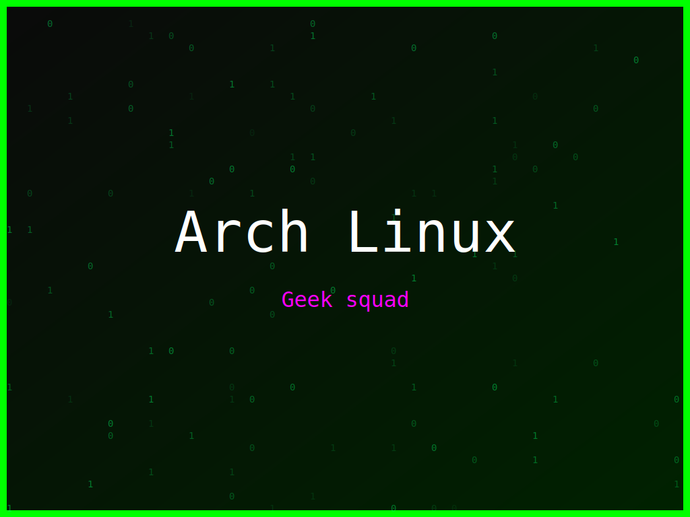

<section class="post-content">


>
    <div class="details-container">
        
        
        <ul class="details-list">
            <li><strong>Autor:</strong> piolinux</li>
            <li><strong>Descrição:</strong> Design Arch Linux com a frase 'Emacs é vida' em tons de verde, para os fãs do editor.</li>
            <li><strong>Distro:</strong> Arch Linux</li>
            <li><strong>Frases:</strong> Mais verde impossível, Emacs é vida, Geek squad</li>
            <li><strong>Tags:</strong> matrix, colorido</li>
        </ul>
        <a href="../galeria.html">Voltar para a galeria</a>||
        <a href="../wallpaper32.svg" download="wallpaper-arch-linux-poder-dos-emacs.svg">Baixar Wallpaper</a>
    </div>


</section>
